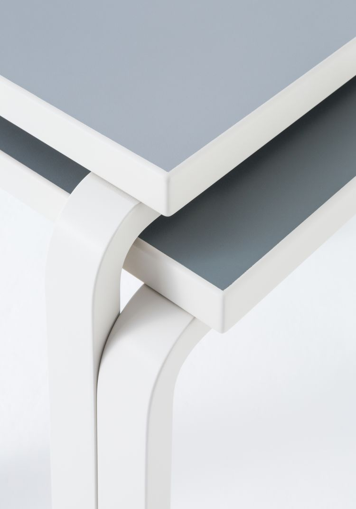

In the late 1920s, architect and designer Alvar Aalto began experimenting with bending wood. In collaboration with furniture manufacturer Otto Korhonen, the Finnish master developed a ground-breaking process that resulted in the L-leg. To create the L-leg, cuts are made in the end of a piece of wood, with the slits extending just below the level of the planned bend. Wood veneer strips are then inserted and glued. This simplifies the bending process and increases the stability of the component. Aalto called the L-leg “the little sister of the architectural column,” and its arrival announced a break with longstanding traditions of furniture production. Patented by Aalto in 1933, this technique meant that the warm, organic qualities of wood could be used to form stable hardwearing designs. Its system of standard components enabled the creation of more than 50 versatile products.
Rectangular, square and round L-leg tables can be manufactured to be stackable
"The L-leg is the little sister of the architectural column"